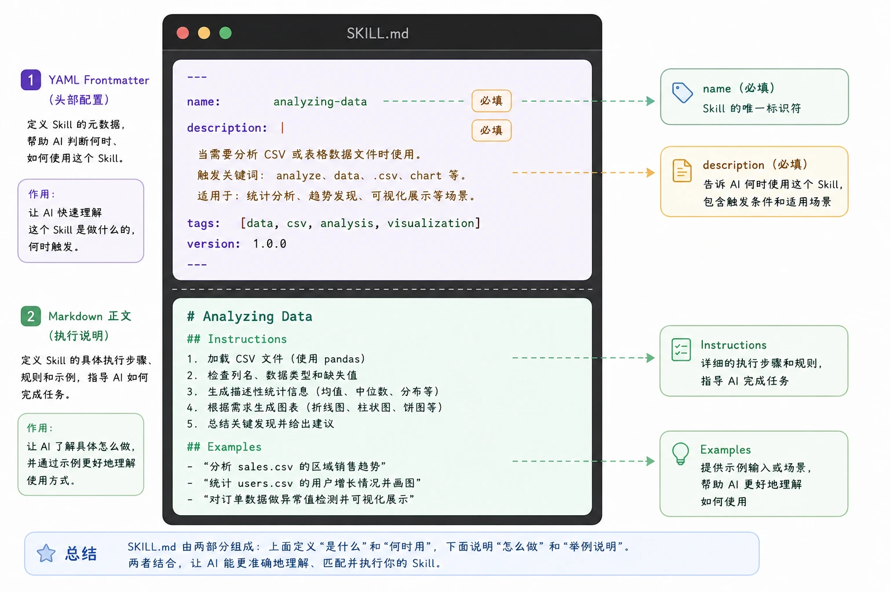

Estructura Básica de Skills
La esencia central de Skills es proporcionar a la IA guías operativas que definen procesos de ejecución estandarizados. Una vez escritas las reglas, pueden invocarse repetidamente y reutilizarse directamente, como funciones de programa.
Skills se almacenan en formato de texto Markdown y no ejecutan funciones directamente por sí mismos.
Las características de carga bajo demanda e invocación progresiva de Skills permiten acumular eficazmente experiencia laboral, logrando una rápida reutilización y una transmisión precisa de capacidades.
Estructura central de Skill
El núcleo de Skills es:Una carpeta + un archivo SKILL.md。
El archivo SKILL.md contiene:
- Metadatos (al menos deben tener nombre y descripción)
- Instrucciones que le indican a la IA cómo completar una tarea específica

Un Skill es esencialmente un archivo Markdown (nombre de archivo fijo: SKILL.md)
my-skill/ └── SKILL.md （唯一必需）
Plantilla básica de SKILL.md:
--- name: your-skill-name description: 一句话描述该 Skill 的功能和使用场景 --- # Skill 名称 ## 使用指引 [给 AI 的分步骤行为指引] ## 示例 [该 Skill 的具体使用示例]
Todo el SKILL.md se divide en dos partes: el frontmatter YAML envuelto por------ (configuración de cabecera), y el cuerpo de Markdown debajo (instrucciones de ejecución).
| Campo | Obligatorio | Descripción | Ejemplo |
|---|---|---|---|
name | 是 | Identificador único del Skill, nombrado en kebab-case. Será referenciado por el comando / y es el campo clave para que el sistema reconozca el Skill. | web-design-guidelines |
description | 是 | Describe la funcionalidad y los escenarios de activación en una frase. Cuanto más específico sea el contenido, más precisa será la activación. | UI/UX design review for web pages |
A continuación, desglosamos cada parte una por una:

Frontmatter: dos campos obligatorios
El Frontmatter es el bloque de configuración YAML envuelto por --- en la parte superior de SKILL.md, y es la información de identidad de todo el Skill.
La documentación oficial solo especifica dos campos obligatorios:
Campo 1: name (nombre de la habilidad)
El campo name tiene un máximo de 64 caracteres y solo puede contener letras minúsculas, números y guiones.
name: processing-pdfs # 好：动名词形式，清晰描述功能 name: analyzing-spreadsheets # 好：一眼知道用途 name: my-brand-guidelines # 好：组织专属知识 name: helper # 差：太模糊 name: MySkill # 差：包含大写字母（不合规） name: data files # 差：包含空格（不合规）
Se recomienda usar la forma de gerundio (verbo + -ing) para nombrar, como processing-pdfs, analyzing-spreadsheets, lo que describe claramente las actividades o capacidades que ofrece el Skill.
| Recomendado | No recomendado | Razón |
|---|---|---|
code-reviewer | CodeReviewer | Usa minúsculas y guiones de forma uniforme para evitar problemas de compatibilidad entre plataformas. |
sql-optimizer | sql_optimizer | kebab-case es el formato establecido por convención y se mantiene coherente con el nombre del directorio. |
deploy-check | deploy-check-tool-v2 | El nombre debe ser breve; la información de versión debe colocarse en la documentación interna del archivo. |
Campo 2: description (descripción de la condición de activación)
Este es el campo más importante. Al iniciar, el sistema solo precarga el name y la description de todos los Skills en el prompt del sistema.
Solo cuando la IA determina que la description está relacionada con la tarea actual, procederá a leer el contenido completo del SKILL.md.
La description debe incluir dos partes simultáneamente:Qué hace este Skill y cuándo Claude debería usarlo.
description: | Use when the user needs to create, read, edit, or generate Word documents (.docx). Triggers include: 'Word doc', 'word document', '.docx', 'report', 'letter', 'memo', or any request to produce a formatted document for sharing or printing.

Cuerpo de Markdown: estructura interna de las instrucciones de ejecución
| Recomendado | No recomendado | Razón |
|---|---|---|
| «Escanear código Python en busca de riesgos de inyección SQL y proporcionar sugerencias de corrección» | «Una herramienta de seguridad» | La descripción es demasiado genérica y no se puede activar con precisión. |
| «Convertir Markdown a correos electrónicos HTML que cumplan con las normas de marca» | «Convertir formatos de archivo» | Carece de escenarios específicos y puede activarse por error en otras tareas. |
Después del Frontmatter viene el cuerpo de Markdown, que le indica a la IA exactamente cómo hacerlo.
Debe contener al menos dos secciones:

Ejemplo de SKILL.md
Plantilla básica de SKILL.md:
--- name: pdf-processing description: 从 PDF 中提取文本和表格，填写表单，并合并文档 --- # PDF 处理 ## 使用场景 当需要对 PDF 文件进行操作时使用，例如： - 提取 PDF 文本或表格数据 - 填写 PDF 表单 - 合并多个 PDF 文件 ## 提取文本 - 使用 `pdfplumber` 提取文本型 PDF 内容 - 扫描版 PDF 需配合 OCR 工具 ## 填写表单 - 读取 PDF 表单字段 - 按输入数据填充并生成新文件
Ejemplo mínimo obligatorio:
--- name: skill-name description: 说明该 Skill 的功能以及适用场景 ---
Ejemplo con campos opcionales:
--- name: pdf-processing description: 从 PDF 中提取文本和表格，填写表单，并合并文档 license: Apache-2.0 metadata: author: example-org version: "1.0" ---
Descripción de campos:
| Campo | Requerido | Descripción |
|---|---|---|
| name | 是 | Nombre del Skill, máximo 64 caracteres, solo puede usar letras minúsculas, números y-, y no puede-comenzar o terminar con |
| description | 是 | Descripción de la funcionalidad y los escenarios de uso, máximo 1024 caracteres, no puede estar vacía. |
| license | 否 | Nombre de la licencia o referencia al archivo de licencia adjunto al Skill. |
| compatibility | 否 | Descripción del entorno y las dependencias (productos, paquetes del sistema, permisos de red, etc.), máximo 500 caracteres. |
| metadata | 否 | Pares clave-valor personalizados para ampliar metadatos (como autor, número de versión). |
| allowed-tools | 否 | Lista de herramientas permitidas (separadas por espacios, funcionalidad experimental). |
Estructura de directorios de archivos de Skill
Una habilidad es una carpeta que contiene al menos un archivo SKILL.md y, según sea necesario, también puede incluir otros directorios y archivos.
Para evitar el inflado del contexto:
- Reglas centrales →
SKILL.md - Materiales detallados → archivos separados
- Lógica práctica → ejecución por script (no se carga)
Estructura recomendada:
my-skill/
├── SKILL.md # 必需：元数据 + 指令
├── scripts/ # 可选：可执行代码
└── helper.py
├── references/ # 可选：参考文档
├── assets/ # 可选：模板、资源
└── ... # 其他文件或目录
La función de cada directorio es la siguiente:
- SKILL.md: archivo requerido, contiene los metadatos y las instrucciones de ejecución de la habilidad
- scripts/: directorio opcional, contiene código ejecutable que el agente puede ejecutar
- references/: directorio opcional, contiene materiales de referencia detallados
- assets/: directorio opcional, contiene recursos estáticos como plantillas, imágenes, etc.
 Otras extensiones
Otras extensiones
Haz clic para compartir notas
<p style="font-size:14px;">¡Las notas deben ser una extensión del contenido de este artículo!</p><br> <p style="font-size:12px;"><a href="../tougao.html" target="_blank">Para enviar artículos, haz clic aquí</a></p> <p style="font-size:14px;"><a href="../w3cnote/runoob-user-test-intro.html" target="_blank">Método para obtener el código de invitación de registro</a></p> <h3 class="text-muted"><i class="fa fa-info-circle" aria-hidden="true"></i> ¡Debes <a href=";.html" class="runoob-pop">iniciar sesión</a> antes de compartir notas!</h3> <p><a href="../w3cnote/runoob-user-test-intro.html" target="_blank">Método para obtener el código de invitación de registro</a></p>